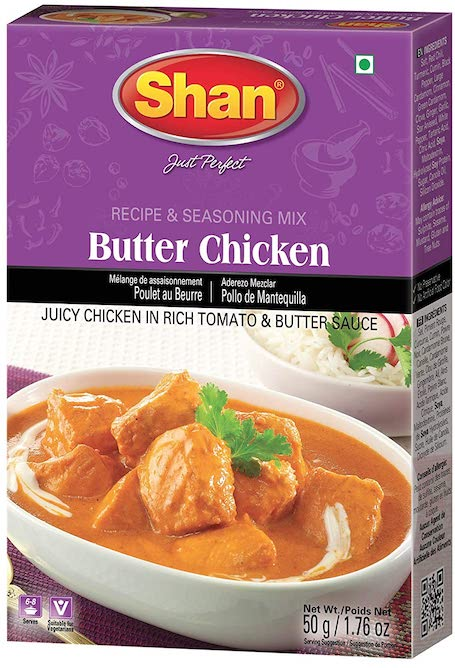

Butterless Butter Chicken

A surprisingly easy butter chicken recipe (without butter!) as taught to me by my friend’s Pakistani mom.
Several of my college friends have said that this is the best chicken dish they’ve ever had.
Ingredients
For 6 servings
See “Notes” section for items with a *
- 2 pounds of chicken
- 1 can of tomato paste
- 2 tsp of lemon juice
- 3 tbsp of plain yogurt
- 1/2 cup of half and half cream
- 2 tbsp of cooking oil
- 1 packet of butter chicken spice mix
- 2 cups of dry rice
Directions
- Mix lemon juice, yogurt, cooking oil, spice mix, and toss the chicken in it.
- Let the chicken marinate for 1-3 hours
- Cook rice however you want.
- Empty the tomato paste into a bowl, fill the can with water and pour it in, and mix.
- Toss the chicken onto a frying pan on medium heat and cook for 3 minutes.
- Pour the tomato paste / water onto the chicken. Cook for 20 minutes on low heat.
- Add cream, stir everything together, and serve.
Notes
Butter chicken spice mix can be find at almost every Indian grocery and convenience store.
It’ll look something like this.
